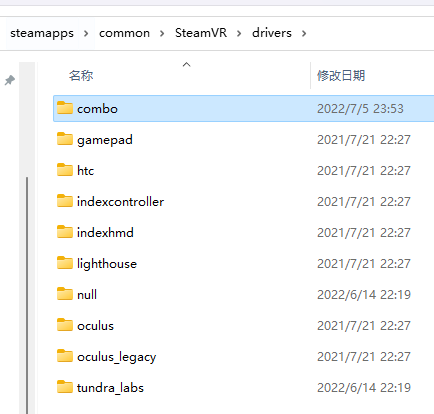

ComboAir
ComboAir 是一套基于多个tracker的动作捕捉系统。
特点
- 采用高精度IMU, 漂移小
- 配备usb dongle, 插上电脑即可和tracker通信，无需繁琐配置2.4GHz WiFi.
- 超低功耗mcu，功耗低于esp32的1/5.
- 磁吸充电接口，充电方便
1. 安装 ComboVR Studio
- 目前只支持 win10 及以上系统，下载地址: 点这里 提取码: iv4j
- 解压之后, 无需安装, 直接打开
ComboVR Studio文件夹下的ComboVrStudio.exe即可运行。
打开后, 应看到如下界面.

2. 设置身体参数
可以先跳过这一步，等走完整个流程之后再回来调整参数
关闭Studio, 在 ComboVR Stduio 文件夹下的player_config.json中设置身体参数(修改相应的数字即可，不要往里边打其他字):

3. 测试通信
-
将dongle用type-c线连接至电脑，将所有tracker静置在桌面上，依次长按tracker的白色按钮3s开机，等tracker闪烁绿灯时，即说明已和dongle建立通信。（目前可能会出现开机时tracker的绿灯长亮而不闪烁的情况，需要长按3s关机，再开机，多试几次，一直到绿灯闪烁）。
-
打开Studio, 点击界面右上角
Serial Port一栏的倒三角，选择dongle对应的端口，即可看到status一栏有的tracker变成Active, 说明已收到tracker的数据。
- 从桌面上拿起tracker, 动一动，可以看到studio界面中对应的tracker在转动。可以此方法来判断各个tracker对应的关节位置。
4. 佩戴 Tracker
- 将tracker用绑带佩戴至相应关节位置

5. 标定
这一步是为了标定出tracker和人体骨骼之间的相对位置关系，这样我们才能通过tracker的姿态来求解人体骨骼的姿态。请通过如下方法操作：
-
佩戴好tracker之后，打开steamvr并串流，佩戴好头盔，在VR界面里显示电脑桌面，并显示Studio界面 ( 这一步第一次使用时可以先忽略，先不用steamvr，先熟悉一下tracker的使用 )
-
按 T-Pose 站立：笔直站立，双脚分开约15cm，脚尖朝前；头水平直视前方；手不用管。站立好后，点击Studio界面上的Set T-Pose按钮.

- 按 S-Pose 站立: 按 T-Pose 的姿势，脚保持不动，膝盖朝前使双腿弯曲，成半蹲姿势；同时上半身往前倾大概20度以上, 手和头不用管。然后点击界面上的 Set S-Pose 按钮.

-
然后点击出现的
Calibrate按钮，即标定完成。此时做一些动作，应可看到 Studio 画面中的骨骼随之移动。如发现画面中的人物姿态不是很准，比如脚出现以前一后，可尝试重复2、3、4步骤重新标定，如果多次标定还是不准，应该检查一下tracker是不是佩戴紧了，是不是有滑动。 -
最后，多测一测，看看是否有卡顿和延迟的情况出现。一般来说，至少20分钟内的漂移是比较小的。
6. 调试效果
建议先不要着急接入steamvr，应该先多测一测，确保在studio里边能有比较稳定的效果。
为了尽量减小漂移，建议每次使用时，先将所有tracker开机，放在地上或桌面上，保持静止一分钟左右，这样会估计出一个非常好的零偏；再将各个tracker佩戴到身上
这时可以看到Studio界面中的骨骼虽然有动作，但是中心位置是不动的，这是因为没有接入VR头盔的位置数据。
接下来，就是接入SteamVR的头盔数据，并将虚拟tracker的数据发送给SteamVR.
6. 接入VR头盔
- 保持Studio开启，请将VR头盔开机，打开SteamVR, 并将头盔串流 (有线或无线均可)。
串流成功之后，应可看到Studio界面右上角HMD一栏的状态由lost变为active, 动一动头盔，应可看到界面上画的头盔也会跟着移动。
这一步可以不用带上头盔操作，但 Oculus Quest2 会在取下头盔之后自动休眠， 导致收不到新的位置数据，可以将头盔上的红外接近传感器用胶布挡住(如下图所示)，这样它就不知道我们已经取下了头盔，从而不会很快进入休眠模式

- 然后戴上头盔，重复上面第五步标定流程，这时候再走动走动，就会看到
Studio界面中的人物位置也开始动了。
7. 在SteamVR中使用
到上一步为止，动作跟踪功能已经实现了。但为了在SteamVR和它支持的游戏中(如VRChat)使用，还需安装steamvr的驱动，也很简单:
-
先关闭SteamVR, 将之前
ComboVR-software解压出来的combo_openvr_driver/下面的combo文件夹复制到SteamVR的driver文件下下面 (driver的路径一般在:C:\Program Files (x86)\Steam\steamapps\common\SteamVR\drivers\).  -
打开steamvr, 应可看到多出来了3个tracker。

-
点击
SteamVR图标 ---设备---管理追踪器---管理Vive追踪器，为每个 combo trakcer 设置相应的部位即可, 如下面三图所示。

-
设置好后, 带上VR头盔，在 steamvr home 低头看一看，应该可以看到腰部和小腿上的tracker, 动一动看是否正常。然后就可以在 vrchat 等游戏中玩耍了.
注意事项
- 重新对齐。目前一般二三十分钟后，tracker的角度漂移会累积得比较大，需要重新对齐：
按T-Pose站立，然后长按左手控制器上食指和中指处的扳机(扣到底)，坚持5s，即可看到已重新对齐。